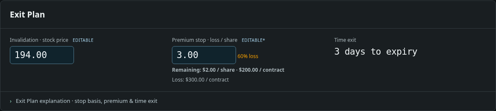
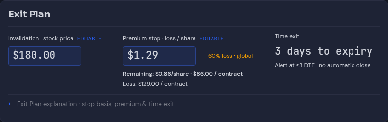
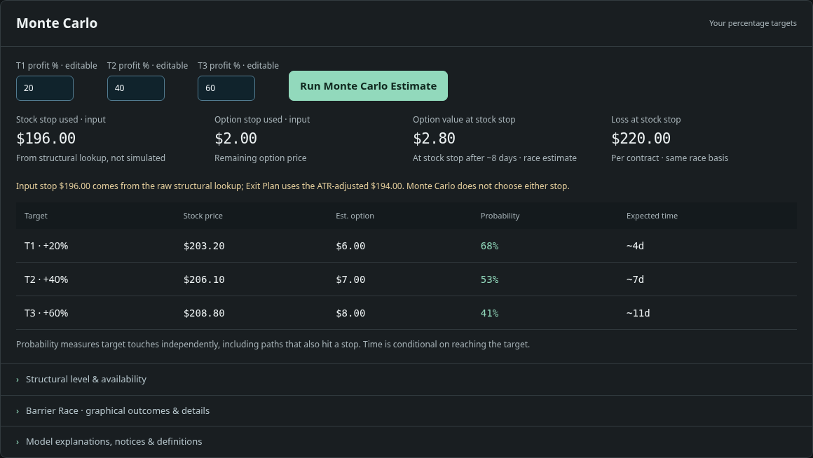
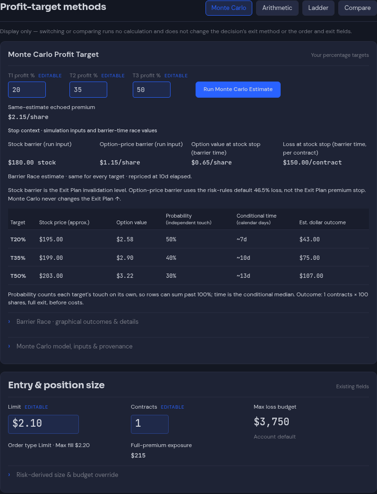
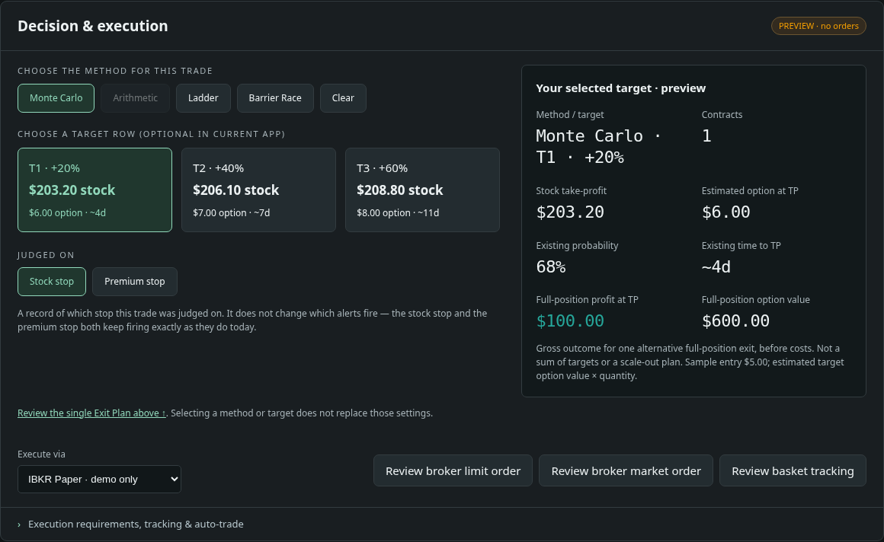
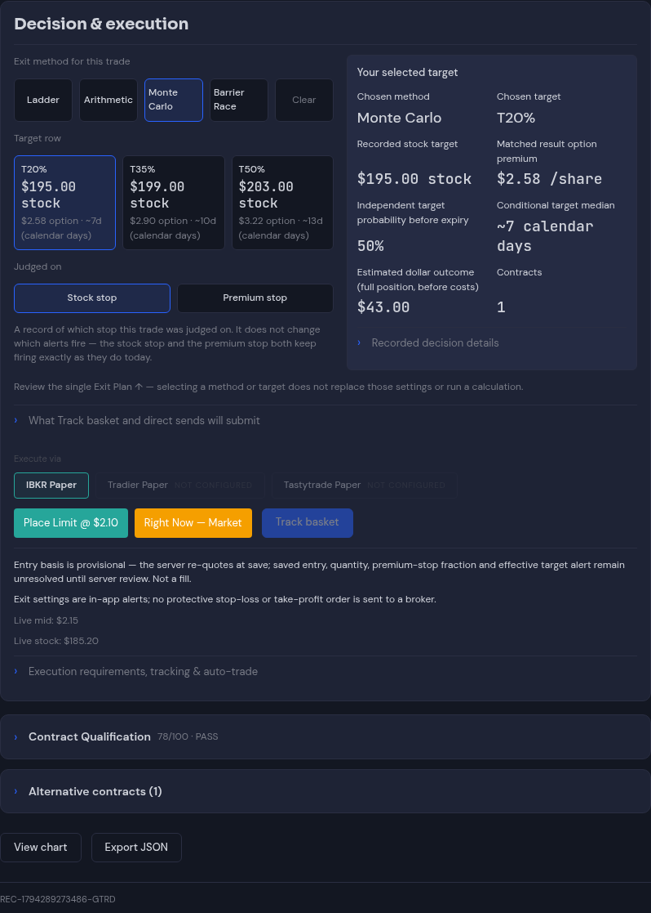

Identity


Actual application screenshots, with mocked data, at device scale1. Click any image for its full resolution. The saved reference has no navigation rails and more usable width; compare information hierarchy, grouping and readability. Example prices are not model specifications.
Verification and limitations · 625-item source inventory · Full explanatory-text audit · Layout checks · State checks · Destination checks






All trading API traffic was mocked inside the capture browser. No real Portfolio save, broker order, provider or notification was sent. Source accounting and browser state checks are distinct: this does not claim625 separate browser assertions.